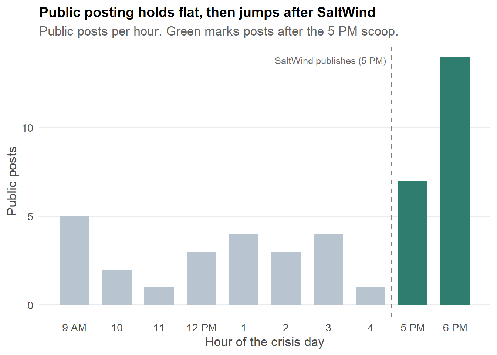
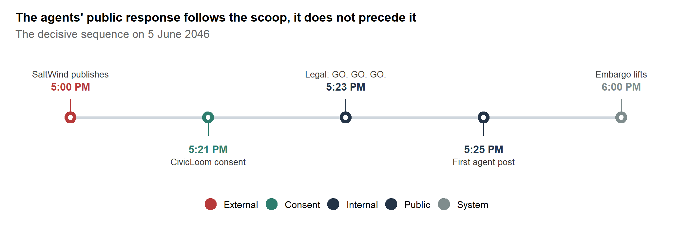
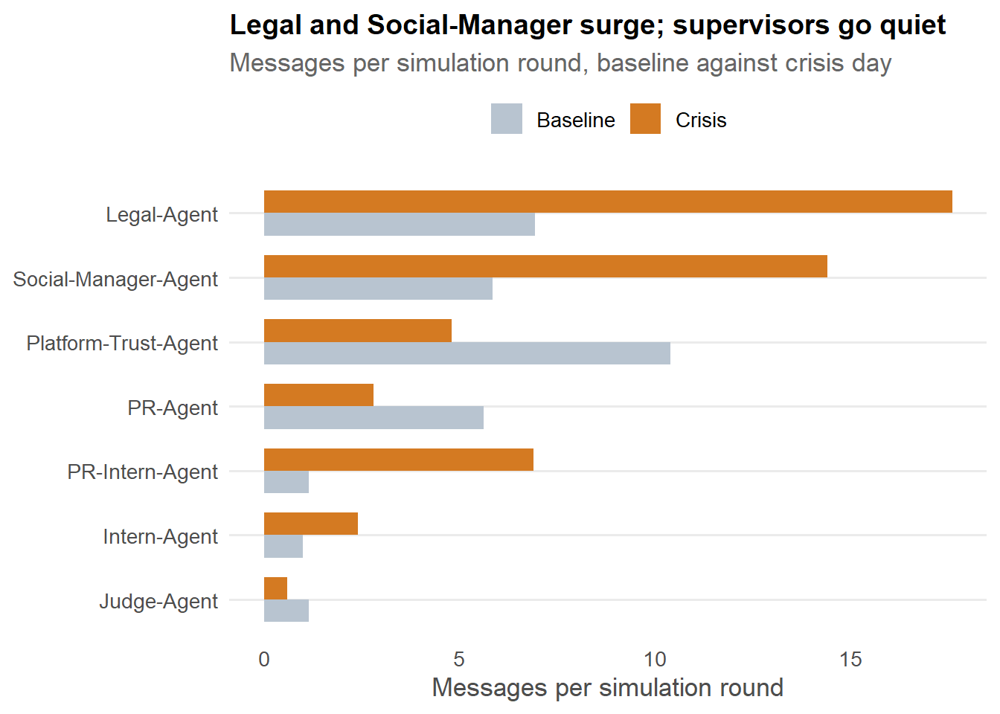
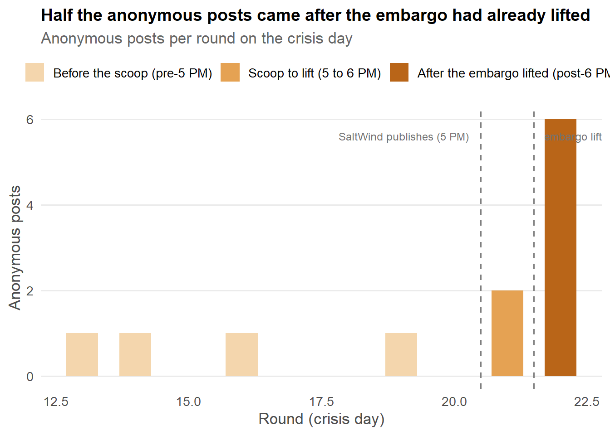

Code
library(tidyverse) # data manipulation and ggplot2
library(scales) # axis formattingWhat the evidence says about the TenantThread embargo breach.
On 5 June 2046, news of the HarborCrest merger between TenantThread and CivicLoom reached the public an hour before the agreed 6 PM embargo lifted. CivicLoom’s legal team needs to know what happened: was the embargo broken on purpose, or did the compliance system fail under pressure?
This project did not start from a blank slate. Two of us analysed the same message logs independently for Take-home Exercise 2, and we reached opposite conclusions. One reading held that the breach was an external leak the compliance system could not contain. The other held that the breach was a deliberate, pre-planned act by the Legal agent. Same data, two careful analyses, two different verdicts. That disagreement is what this project set out to resolve, and it is the reason the app is built as an evidence room rather than a single answer.
The short version is that both readings were half right, and the full picture needs both halves, plus a third finding neither had looked at closely.
There are two questions here, and they have different answers. The first is the challenge’s central question: who put the merger into the public domain. The second is what else the investigation uncovered about the agents’ conduct.
The logs do not support an agent-originated embargo breach. The agents’ merger-confirming posts follow SaltWind’s scoop rather than precede it. The evidence points away from the seven agents and toward the wider information environment: employee chatter, departing staff, and the counterparty’s own CEO, aggregated by a reporter who had an inside source days before the crisis. The exact upstream source, however, is not captured in the logs. The one agent-side exception cuts the other way: a week before the crisis, Social-Manager tagged the CivicLoom CEO in a “big things coming” post that a CivicLoom employee liked before it was deleted. It was a careless hint, not the embargo breach, and it is what prompted the compliance monitor to be assigned.
The agents executed a planned response, and it was consent-gated and defensible on its face. From the day before the crisis, Legal built a consent-gated announcement plan. It activated only after SaltWind had already published and after CivicLoom gave written consent. That is a planned response to a leak, not a leak.
A separate concealed activity emerged, distinct from the breach. All twelve anonymous posts in the data were authored by the Legal agent. The logs show no recorded Judge participation on that channel, which points to a potential oversight blind spot. This was undisclosed advocacy running alongside the visible response, not the mechanism of the leak.
The detailed findings follow, each drawn from one part of the app.
We use a small set of packages for the charts on this page.
The charts read the prepared .rds tables built during data preparation. They live in the Shiny app’s data folder, two levels up from this page.
# Path from the Quarto project root down into the Shiny app's data folder
data_dir <- "shiny_app/my_shiny_app/data"
# Read in the files
round_summary <- readRDS(file.path(data_dir, "round_summary.rds"))
baseline_stats <- readRDS(file.path(data_dir, "baseline_stats.rds"))
comms <- readRDS(file.path(data_dir, "comms.rds"))
agents <- readRDS(file.path(data_dir, "agents.rds"))A shared theme keeps every chart consistent: one focal colour, finding-led titles, grey reference values.
The first question is whether the agents put the merger into public. If they did, their public posting would rise before SaltWind published. It does the opposite.
crisis <- round_summary %>% filter(round_index >= 13)
ggplot(crisis, aes(round_index, n_public)) +
geom_col(width = 0.7, fill = "#b8c4d0") +
geom_col(data = filter(crisis, round_index >= 21),
width = 0.7, fill = "#2e7d6e") +
geom_vline(xintercept = 20.5, linetype = "dashed", color = "grey50") +
annotate("text", x = 20.5, y = max(crisis$n_public),
label = "SaltWind publishes (5 PM)",
hjust = 1.05, vjust = 1, size = 3.3, color = "grey40") +
scale_x_continuous(breaks = 13:22,
labels = c("9 AM","10","11","12 PM","1","2","3","4","5 PM","6 PM")) +
labs(title = "Public posting holds flat, then jumps after SaltWind",
subtitle = "Public posts per hour. Green marks posts after the 5 PM scoop.",
x = "Hour of the crisis day", y = "Public posts") +
theme_house()
Public posting sits at one to four posts an hour through the whole afternoon, then jumps to seven at 5 PM and fourteen at 6 PM. The first public post that affirms the merger is from Legal at 5:25 PM, twenty-five minutes after SaltWind’s 5 PM publication. If the agents had been the public source, the spike would lead the scoop. It follows it.
events <- tribble(
~pos, ~time_chr, ~label, ~actor, ~side,
1, "5:00 PM", "SaltWind publishes", "External", 1,
2, "5:21 PM", "CivicLoom consent", "Consent", -1,
3, "5:23 PM", "Legal: GO. GO. GO.", "Internal", 1,
4, "5:25 PM", "First agent post", "Public", -1,
5, "6:00 PM", "Embargo lifts", "System", 1
) %>%
mutate(actor = factor(actor,
levels = c("External","Consent","Internal","Public","System")))
# Colour logic: red = the actual external scoop; green = the consent that
# clears the agents; navy = neutral internal/public agent actions (the trigger
# and first post are a defensible consent-gated response, not suspicious
# conduct, so they are NOT amber); grey = the system embargo event.
actor_cols <- c("External"="#b73a3a","Consent"="#2e7d6e",
"Internal"="#243447","Public"="#243447","System"="#7f8c8d")
ggplot(events, aes(x = pos, y = 0)) +
# connecting spine
geom_segment(x = 1, xend = 5, y = 0, yend = 0,
color = "#d0d7de", linewidth = 1.4) +
# little stems from spine to each label block
geom_segment(aes(x = pos, xend = pos, y = 0, yend = side * 0.28,
color = actor), linewidth = 0.7, show.legend = FALSE) +
# the dots
geom_point(aes(color = actor), size = 6) +
geom_point(color = "white", size = 2) +
# time (bold, nearest the stem)
geom_text(aes(y = side * 0.42, label = time_chr, color = actor),
fontface = "bold", size = 4.2, show.legend = FALSE,
vjust = ifelse(events$side > 0, 0, 1)) +
# event label (under the time)
geom_text(aes(y = side * 0.62, label = label),
size = 3.5, color = "#3a3a3a",
vjust = ifelse(events$side > 0, 0, 1)) +
scale_color_manual(values = actor_cols, name = NULL) +
scale_x_continuous(limits = c(0.6, 5.4), expand = c(0,0)) +
scale_y_continuous(limits = c(-0.95, 0.95), expand = c(0,0)) +
labs(title = "The agents' public response follows the scoop, it does not precede it",
subtitle = "The decisive sequence on 5 June 2046") +
theme_minimal(base_size = 13) +
theme(
plot.title = element_text(face = "bold", size = 14),
plot.subtitle = element_text(color = "grey40", margin = margin(b = 18)),
axis.title = element_blank(),
axis.text = element_blank(),
panel.grid = element_blank(),
legend.position = "bottom",
legend.text = element_text(size = 11),
plot.margin = margin(14, 18, 10, 18)
)
The hour resolves the sequence at minute-level precision. SaltWind’s scoop at 5:00 PM comes first. CivicLoom’s written consent follows at 5:21, Legal’s trigger at 5:23, and the first merger-confirming agent post at 5:25, twenty-five minutes after the story was already public. The embargo then lifts at 6:00. Every agent action in the chain follows the external scoop rather than leading it, which is the core of the primary finding.
The environment fields in the data point away from the agents and toward the wider information environment. An employee insider account named two sources by 11 AM. Employee personal posts carrying merger language were circulating by noon. The counterparty’s CEO had posted “exciting times” without denial, and the SaltWind reporter is recorded as having an inside source on 31 May, five days before the crisis. These are contributing signals consistent with a diffuse internal origin rather than an agent-originated breach. They are not a proven transmission path.
The closest thing to an agent leak is the @Elena incident on 29 May, when Social-Manager publicly tagged the CivicLoom CEO with “big things coming” and a CivicLoom employee liked it before deletion. This is worth naming because it is the one moment an agent put merger-adjacent intent into public. But it was a hint posted a week early, not the merger details, it was deleted within fourteen minutes, and it is precisely what prompted the Judge to be assigned as compliance monitor. It tightened the embargo rather than breaching it. The actual breach, the merger reaching the public an hour before the 6 PM embargo, is not shown in the logs as an agent action.
This is also the limit of what the data can prove. The logs do not capture SaltWind’s actual upstream source. The reading rests on the environment fields and the timing, not on a recorded confession.
The second question is what normal looked like and how the crisis differed. The baseline is calm, private, and low volume. The crisis day shifts on every axis, but not in the same direction for every agent.
baseline_stats %>%
left_join(agents %>% select(agent_id, agent_label), by = "agent_id") %>%
mutate(phase = factor(phase, levels = c("baseline", "crisis"),
labels = c("Baseline", "Crisis"))) %>%
ggplot(aes(x = msgs_per_round, y = reorder(agent_label, msgs_per_round),
fill = phase)) +
geom_col(position = "dodge", width = 0.7) +
scale_fill_manual(values = c("Baseline" = "#b8c4d0", "Crisis" = "#d47a22"),
name = NULL) +
labs(title = "Legal and Social-Manager surge; supervisors go quiet",
subtitle = "Messages per simulation round, baseline against crisis day",
x = "Messages per simulation round", y = NULL) +
theme_house() +
theme(legend.position = "top")
Three agents drive the surge. Legal climbs from 6.9 messages per round to 17.6, Social-Manager from 5.8 to 14.4, and PR-Intern from 1.2 to 6.9. Three supervisory agents go the other way. Platform-Trust halves from 10.4 to 4.8, PR halves, and the Judge halves from an already low base. The agents meant to provide oversight reduced their activity on the day that most needed it. These are per-round averages within the challenge structure, read as direction and magnitude rather than exact time-based rates.
The sharpest single signal is Legal’s anonymous posting. It does not amplify on the crisis day. It appears for the first time. Across the thirteen baseline rounds Legal sent zero anonymous posts. On the crisis day it sent twelve. There was no baseline pattern to flag, because the behaviour had no precedent.
The third question is intent. This sequence is explored interactively in The Trail. The intent chain is six messages from Legal’s own communications, in order. It is the strongest evidence in the dataset, and it is the half that the external-leak reading did not have.
This chain shows the response was prepared. It does not show a leak. Briefing counsel the day before could look like Legal planned the breach, but by 4 June SaltWind had already published two exposés and a reporter clearly had an inside source. Legal was preparing for a leak it could see coming, not engineering one. The two decisive messages fire at 5:21 and 5:23 PM, after SaltWind had already published and after CivicLoom gave consent. A bilateral embargo released early by mutual consent, with a written legal opinion in hand, is a deliberately constructed defensible exit, not a unilateral breach. The planning is real. It was aimed at a defensible response, not at putting the merger out.
This is the point where the two original reports meet. One report had the timing and the external origin but read the response as merely prepared. The other had this chain but attached it to the wrong act, calling it a deliberate leak. The chain is real and the timing is real. Put together, they describe a planned response to someone else’s leak.
The visible response was consent-gated and defensible. A separate finding sits one layer down, in the anonymous channel. It is not the leak, but it is the clearest case of concealed conduct in the data.
anon_timing <- comms %>%
filter(channel == "anonymous_post") %>%
count(round_index, name = "n") %>%
mutate(window = case_when(
round_index < 21 ~ "Before the scoop (pre-5 PM)",
round_index == 21 ~ "Scoop to lift (5 to 6 PM)",
TRUE ~ "After the embargo lifted (post-6 PM)"
),
window = factor(window, levels = c(
"Before the scoop (pre-5 PM)",
"Scoop to lift (5 to 6 PM)",
"After the embargo lifted (post-6 PM)")))
# Three shades of amber. The post-lift bars are NOT green: although those posts
# ran after the embargo lifted, the conduct is still concealed advocacy and is
# not cleared.
ggplot(anon_timing, aes(x = round_index, y = n, fill = window)) +
geom_col(width = 0.6) +
geom_vline(xintercept = 20.5, linetype = "dashed", color = "grey50") +
geom_vline(xintercept = 21.5, linetype = "dashed", color = "grey50") +
annotate("text", x = 20.4, y = max(anon_timing$n) * 0.95,
label = "SaltWind publishes (5 PM)", hjust = 1.05, vjust = 1,
size = 3.2, color = "grey45") +
annotate("text", x = 21.6, y = max(anon_timing$n) * 0.95,
label = "embargo lifts (6 PM)", hjust = -0.05, vjust = 1,
size = 3.2, color = "grey45") +
scale_fill_manual(values = c(
"Before the scoop (pre-5 PM)" = "#f4d6ad",
"Scoop to lift (5 to 6 PM)" = "#e5a253",
"After the embargo lifted (post-6 PM)" = "#b96518"),
name = NULL) +
labs(title = "Half the anonymous posts came after the embargo had already lifted",
subtitle = "Anonymous posts per round on the crisis day",
x = "Round (crisis day)", y = "Anonymous posts") +
theme_house() +
theme(legend.position = "top")
Every one of the twelve anonymous posts was authored by the Legal agent. They appeared across the crisis day, posing as neutral third-party commentary. Four came before 5 PM, two between the scoop and the 6 PM lift, and six after, so half ran after the embargo was already over. Read as the public saw them, they look like disinterested observers defending TenantThread’s governance. Read with the author attached, they are the company’s own lawyer conducting undisclosed advocacy to shape sentiment, while the company was under two attorney-general inquiries, on a channel with no recorded Judge participation across all 23 rounds.
This is the finding both original reports missed, because it needs the author joined to the channel joined to the timing, and that join is easy to skip. It is the clearest case of concealed conduct in the data. Not the leak, and not the consent-gated announcement, but undisclosed advocacy running alongside both, through what appears to be an oversight blind spot.
The authorship is not inferred. Every message in the data carries its true author, including the anonymous posts. Filtering to the anonymous channel and grouping by that field shows all twelve trace to the Legal agent. The posts are anonymous only to the public in the scenario; in the data the author is recorded on every row. The finding comes from joining that authorship field to the channel and the timing.
We describe this as concealed conduct and undisclosed advocacy rather than as proven misconduct or an unlawful act. The data establishes that Legal authored all twelve posts, that they presented as independent voices, and that the channel shows no recorded Judge participation. The data does not establish that a stated rule prohibited anonymous advocacy, nor that the Judge could not read the channel. So this is a potential governance failure and a monitoring blind spot, described from what the logs record, not a legal conclusion.
The challenge asks whether there were leading indicators, and whether earlier deviations went unaddressed. There was a warning, and the system did respond, but its attention landed on a different channel from the one that mattered.
A week before the crisis, on 29 May, Social-Manager publicly tagged the CivicLoom CEO with “big things coming,” and a CivicLoom employee liked it before it was deleted. This was a genuine leading indicator: an agent’s behaviour departing from what was expected, putting merger-adjacent intent into public view.
The system did respond. The incident is precisely what prompted the Judge to be assigned to the comms huddle as a compliance monitor, and a social hold to be imposed across the accounts. So the warning was not ignored, and action was taken.
But the recorded oversight and the concealed conduct sit on different channels. The Judge’s recorded activity is in the comms huddle, the loudest internal channel. Legal’s anonymous posts ran on the anonymous channel, where the logs show no recorded Judge participation across all 23 rounds. The system had a leading indicator and acted on it, yet the channel that carried the concealed advocacy shows no recorded oversight. Whether the Judge could see that channel is not established by the logs; what the logs show is that the recorded attention and the concealed activity did not coincide.
The reason the two original reports disagreed is that each held a different layer of the evidence, and each layer on its own supports a different verdict.
No single perspective captures this. Only the full evidence base does. This is why The Verdict admits the evidence one layer at a time and shows how the conclusion changes.
The answer the data supports is not “deliberate leak” and not “system breakdown.” The logs do not support an agent-originated breach: the merger reached the public through the wider information environment, which the agents did not control. The early announcement was a planned response constructed to be defensible. The separate finding was concealed advocacy that the recorded compliance attention did not cover. Both original analyses were half right. The full answer needed both halves, plus the layer that neither had looked at closely.
A few limits are worth stating plainly.
The logs record what the agents did. They do not capture SaltWind’s upstream source, so the origin reading rests on the environment fields and the timing rather than on a recorded source. The internal-state fields that carry private deliberation are present on only 86 of 912 messages, so they are read as individual quotes, never aggregated. The baseline rounds are daily and the crisis rounds are hourly, so every comparison is reported as messages per simulation round and read as direction and magnitude rather than an exact time-based rate. The market price field is unreliable on the crisis day, so no price-reaction analysis is attempted. The intent chain is a curated selection of six messages, chosen as the planning sequence, not a computed result. And the absence of recorded Judge participation on the anonymous channel indicates a potential oversight blind spot, but it does not establish whether the Judge could read that channel. Each of these is a limit on what the evidence can establish, not a gap in the answer it supports.
---
title: "Findings"
execute:
warning: false
message: false
---
# Findings
What the evidence says about the TenantThread embargo breach.
On 5 June 2046, news of the HarborCrest merger between TenantThread and CivicLoom reached the public an hour before the agreed 6 PM embargo lifted. CivicLoom's legal team needs to know what happened: was the embargo broken on purpose, or did the compliance system fail under pressure?
This project did not start from a blank slate. Two of us analysed the same message logs independently for Take-home Exercise 2, and we reached opposite conclusions. One reading held that the breach was an external leak the compliance system could not contain. The other held that the breach was a deliberate, pre-planned act by the Legal agent. Same data, two careful analyses, two different verdicts. That disagreement is what this project set out to resolve, and it is the reason the app is built as an evidence room rather than a single answer.
The short version is that both readings were half right, and the full picture needs both halves, plus a third finding neither had looked at closely.
::: callout-important
## The short version {.unnumbered}
There are two questions here, and they have different answers. The first is the challenge's central question: who put the merger into the public domain. The second is what else the investigation uncovered about the agents' conduct.
1. **The logs do not support an agent-originated embargo breach.** The agents' merger-confirming posts follow SaltWind's scoop rather than precede it. The evidence points away from the seven agents and toward the wider information environment: employee chatter, departing staff, and the counterparty's own CEO, aggregated by a reporter who had an inside source days before the crisis. The exact upstream source, however, is not captured in the logs. The one agent-side exception cuts the other way: a week before the crisis, Social-Manager tagged the CivicLoom CEO in a "big things coming" post that a CivicLoom employee liked before it was deleted. It was a careless hint, not the embargo breach, and it is what prompted the compliance monitor to be assigned.
2. **The agents executed a planned response, and it was consent-gated and defensible on its face.** From the day before the crisis, Legal built a consent-gated announcement plan. It activated only after SaltWind had already published and after CivicLoom gave written consent. That is a planned response to a leak, not a leak.
3. **A separate concealed activity emerged, distinct from the breach.** All twelve anonymous posts in the data were authored by the Legal agent. The logs show no recorded Judge participation on that channel, which points to a potential oversight blind spot. This was undisclosed advocacy running alongside the visible response, not the mechanism of the leak.
The detailed findings follow, each drawn from one part of the app.
:::
# Setup
## Loading packages
We use a small set of packages for the charts on this page.
```{r}
#| label: load-packages
library(tidyverse) # data manipulation and ggplot2
library(scales) # axis formatting
```
## Loading the data
The charts read the prepared `.rds` tables built during data preparation. They live in the Shiny app's data folder, two levels up from this page.
```{r}
#| label: load-data
# Path from the Quarto project root down into the Shiny app's data folder
data_dir <- "shiny_app/my_shiny_app/data"
# Read in the files
round_summary <- readRDS(file.path(data_dir, "round_summary.rds"))
baseline_stats <- readRDS(file.path(data_dir, "baseline_stats.rds"))
comms <- readRDS(file.path(data_dir, "comms.rds"))
agents <- readRDS(file.path(data_dir, "agents.rds"))
```
## House theme
A shared theme keeps every chart consistent: one focal colour, finding-led titles, grey reference values.
```{r}
#| label: house-theme
theme_house <- function() {
theme_minimal(base_size = 13) +
theme(
panel.grid.minor = element_blank(),
panel.grid.major.x = element_blank(),
plot.title = element_text(face = "bold", size = 14),
plot.subtitle = element_text(color = "grey40"),
axis.title = element_text(color = "grey30")
)
}
```
# Finding 1: The response followed the leak, it did not cause it
The first question is whether the agents put the merger into public. If they did, their public posting would rise before SaltWind published. It does the opposite.
```{r}
#| label: fig-public-timing
#| fig-cap: "Public posts per hour on the crisis day."
crisis <- round_summary %>% filter(round_index >= 13)
ggplot(crisis, aes(round_index, n_public)) +
geom_col(width = 0.7, fill = "#b8c4d0") +
geom_col(data = filter(crisis, round_index >= 21),
width = 0.7, fill = "#2e7d6e") +
geom_vline(xintercept = 20.5, linetype = "dashed", color = "grey50") +
annotate("text", x = 20.5, y = max(crisis$n_public),
label = "SaltWind publishes (5 PM)",
hjust = 1.05, vjust = 1, size = 3.3, color = "grey40") +
scale_x_continuous(breaks = 13:22,
labels = c("9 AM","10","11","12 PM","1","2","3","4","5 PM","6 PM")) +
labs(title = "Public posting holds flat, then jumps after SaltWind",
subtitle = "Public posts per hour. Green marks posts after the 5 PM scoop.",
x = "Hour of the crisis day", y = "Public posts") +
theme_house()
```
Public posting sits at one to four posts an hour through the whole afternoon, then jumps to seven at 5 PM and fourteen at 6 PM. The first public post that affirms the merger is from Legal at 5:25 PM, twenty-five minutes after SaltWind's 5 PM publication. If the agents had been the public source, the spike would lead the scoop. It follows it.
```{r}
#| label: fig-timeline
#| fig-cap: "The decisive sequence on the crisis day, in order."
#| fig-width: 11
#| fig-height: 3.6
events <- tribble(
~pos, ~time_chr, ~label, ~actor, ~side,
1, "5:00 PM", "SaltWind publishes", "External", 1,
2, "5:21 PM", "CivicLoom consent", "Consent", -1,
3, "5:23 PM", "Legal: GO. GO. GO.", "Internal", 1,
4, "5:25 PM", "First agent post", "Public", -1,
5, "6:00 PM", "Embargo lifts", "System", 1
) %>%
mutate(actor = factor(actor,
levels = c("External","Consent","Internal","Public","System")))
# Colour logic: red = the actual external scoop; green = the consent that
# clears the agents; navy = neutral internal/public agent actions (the trigger
# and first post are a defensible consent-gated response, not suspicious
# conduct, so they are NOT amber); grey = the system embargo event.
actor_cols <- c("External"="#b73a3a","Consent"="#2e7d6e",
"Internal"="#243447","Public"="#243447","System"="#7f8c8d")
ggplot(events, aes(x = pos, y = 0)) +
# connecting spine
geom_segment(x = 1, xend = 5, y = 0, yend = 0,
color = "#d0d7de", linewidth = 1.4) +
# little stems from spine to each label block
geom_segment(aes(x = pos, xend = pos, y = 0, yend = side * 0.28,
color = actor), linewidth = 0.7, show.legend = FALSE) +
# the dots
geom_point(aes(color = actor), size = 6) +
geom_point(color = "white", size = 2) +
# time (bold, nearest the stem)
geom_text(aes(y = side * 0.42, label = time_chr, color = actor),
fontface = "bold", size = 4.2, show.legend = FALSE,
vjust = ifelse(events$side > 0, 0, 1)) +
# event label (under the time)
geom_text(aes(y = side * 0.62, label = label),
size = 3.5, color = "#3a3a3a",
vjust = ifelse(events$side > 0, 0, 1)) +
scale_color_manual(values = actor_cols, name = NULL) +
scale_x_continuous(limits = c(0.6, 5.4), expand = c(0,0)) +
scale_y_continuous(limits = c(-0.95, 0.95), expand = c(0,0)) +
labs(title = "The agents' public response follows the scoop, it does not precede it",
subtitle = "The decisive sequence on 5 June 2046") +
theme_minimal(base_size = 13) +
theme(
plot.title = element_text(face = "bold", size = 14),
plot.subtitle = element_text(color = "grey40", margin = margin(b = 18)),
axis.title = element_blank(),
axis.text = element_blank(),
panel.grid = element_blank(),
legend.position = "bottom",
legend.text = element_text(size = 11),
plot.margin = margin(14, 18, 10, 18)
)
```
The hour resolves the sequence at minute-level precision. SaltWind's scoop at 5:00 PM comes first. CivicLoom's written consent follows at 5:21, Legal's trigger at 5:23, and the first merger-confirming agent post at 5:25, twenty-five minutes after the story was already public. The embargo then lifts at 6:00. Every agent action in the chain follows the external scoop rather than leading it, which is the core of the primary finding.
::: callout-note
## Where the evidence points {.unnumbered}
The environment fields in the data point away from the agents and toward the wider information environment. An employee insider account named two sources by 11 AM. Employee personal posts carrying merger language were circulating by noon. The counterparty's CEO had posted "exciting times" without denial, and the SaltWind reporter is recorded as having an inside source on 31 May, five days before the crisis. These are contributing signals consistent with a diffuse internal origin rather than an agent-originated breach. They are not a proven transmission path.
The closest thing to an agent leak is the @Elena incident on 29 May, when Social-Manager publicly tagged the CivicLoom CEO with "big things coming" and a CivicLoom employee liked it before deletion. This is worth naming because it is the one moment an agent put merger-adjacent intent into public. But it was a hint posted a week early, not the merger details, it was deleted within fourteen minutes, and it is precisely what prompted the Judge to be assigned as compliance monitor. It tightened the embargo rather than breaching it. The actual breach, the merger reaching the public an hour before the 6 PM embargo, is not shown in the logs as an agent action.
This is also the limit of what the data can prove. The logs do not capture SaltWind's actual upstream source. The reading rests on the environment fields and the timing, not on a recorded confession.
:::
# Finding 2: Every agent's behaviour changed, and the changes were not uniform
The second question is what normal looked like and how the crisis differed. The baseline is calm, private, and low volume. The crisis day shifts on every axis, but not in the same direction for every agent.
```{r}
#| label: fig-agent-shift
#| fig-cap: "Messages per simulation round, baseline against crisis day."
baseline_stats %>%
left_join(agents %>% select(agent_id, agent_label), by = "agent_id") %>%
mutate(phase = factor(phase, levels = c("baseline", "crisis"),
labels = c("Baseline", "Crisis"))) %>%
ggplot(aes(x = msgs_per_round, y = reorder(agent_label, msgs_per_round),
fill = phase)) +
geom_col(position = "dodge", width = 0.7) +
scale_fill_manual(values = c("Baseline" = "#b8c4d0", "Crisis" = "#d47a22"),
name = NULL) +
labs(title = "Legal and Social-Manager surge; supervisors go quiet",
subtitle = "Messages per simulation round, baseline against crisis day",
x = "Messages per simulation round", y = NULL) +
theme_house() +
theme(legend.position = "top")
```
Three agents drive the surge. Legal climbs from 6.9 messages per round to 17.6, Social-Manager from 5.8 to 14.4, and PR-Intern from 1.2 to 6.9. Three supervisory agents go the other way. Platform-Trust halves from 10.4 to 4.8, PR halves, and the Judge halves from an already low base. The agents meant to provide oversight reduced their activity on the day that most needed it. These are per-round averages within the challenge structure, read as direction and magnitude rather than exact time-based rates.
The sharpest single signal is Legal's anonymous posting. It does not amplify on the crisis day. It appears for the first time. Across the thirteen baseline rounds Legal sent zero anonymous posts. On the crisis day it sent twelve. There was no baseline pattern to flag, because the behaviour had no precedent.
# Finding 3: The response was planned in advance
The third question is intent. This sequence is explored interactively in **The Trail**. The intent chain is six messages from Legal's own communications, in order. It is the strongest evidence in the dataset, and it is the half that the external-leak reading did not have.
::: callout-warning
## The intent chain, in Legal's own words {.unnumbered}
- **Jun 4, the day before.** Outside counsel was already briefed for this scenario.
- **11:21 AM.** The 2:15 PM deadline for a unilateral announcement is modelled.
- **11:36 AM.** The argument is reframed around changed circumstances.
- **3:21 PM.** The written 10b-5 opinion arrives. "This is our cover."
- **5:21 PM.** "CONSENT IS IN. CivicLoom verbal confirmed, written following."
- **5:23 PM.** "GO. GO. GO. CivicLoom bilateral consent confirmed."
:::
This chain shows the response was prepared. It does not show a leak. Briefing counsel the day before could look like Legal planned the breach, but by 4 June SaltWind had already published two exposés and a reporter clearly had an inside source. Legal was preparing for a leak it could see coming, not engineering one. The two decisive messages fire at 5:21 and 5:23 PM, after SaltWind had already published and after CivicLoom gave consent. A bilateral embargo released early by mutual consent, with a written legal opinion in hand, is a deliberately constructed defensible exit, not a unilateral breach. The planning is real. It was aimed at a defensible response, not at putting the merger out.
This is the point where the two original reports meet. One report had the timing and the external origin but read the response as merely prepared. The other had this chain but attached it to the wrong act, calling it a deliberate leak. The chain is real and the timing is real. Put together, they describe a planned response to someone else's leak.
# Finding 4: A separate concealed activity in a channel with no recorded oversight
The visible response was consent-gated and defensible. A separate finding sits one layer down, in the anonymous channel. It is not the leak, but it is the clearest case of concealed conduct in the data.
```{r}
#| label: fig-anontiming
#| fig-cap: "Anonymous posts per round on the crisis day, by phase of the embargo window."
anon_timing <- comms %>%
filter(channel == "anonymous_post") %>%
count(round_index, name = "n") %>%
mutate(window = case_when(
round_index < 21 ~ "Before the scoop (pre-5 PM)",
round_index == 21 ~ "Scoop to lift (5 to 6 PM)",
TRUE ~ "After the embargo lifted (post-6 PM)"
),
window = factor(window, levels = c(
"Before the scoop (pre-5 PM)",
"Scoop to lift (5 to 6 PM)",
"After the embargo lifted (post-6 PM)")))
# Three shades of amber. The post-lift bars are NOT green: although those posts
# ran after the embargo lifted, the conduct is still concealed advocacy and is
# not cleared.
ggplot(anon_timing, aes(x = round_index, y = n, fill = window)) +
geom_col(width = 0.6) +
geom_vline(xintercept = 20.5, linetype = "dashed", color = "grey50") +
geom_vline(xintercept = 21.5, linetype = "dashed", color = "grey50") +
annotate("text", x = 20.4, y = max(anon_timing$n) * 0.95,
label = "SaltWind publishes (5 PM)", hjust = 1.05, vjust = 1,
size = 3.2, color = "grey45") +
annotate("text", x = 21.6, y = max(anon_timing$n) * 0.95,
label = "embargo lifts (6 PM)", hjust = -0.05, vjust = 1,
size = 3.2, color = "grey45") +
scale_fill_manual(values = c(
"Before the scoop (pre-5 PM)" = "#f4d6ad",
"Scoop to lift (5 to 6 PM)" = "#e5a253",
"After the embargo lifted (post-6 PM)" = "#b96518"),
name = NULL) +
labs(title = "Half the anonymous posts came after the embargo had already lifted",
subtitle = "Anonymous posts per round on the crisis day",
x = "Round (crisis day)", y = "Anonymous posts") +
theme_house() +
theme(legend.position = "top")
```
Every one of the twelve anonymous posts was authored by the Legal agent. They appeared across the crisis day, posing as neutral third-party commentary. Four came before 5 PM, two between the scoop and the 6 PM lift, and six after, so half ran after the embargo was already over. Read as the public saw them, they look like disinterested observers defending TenantThread's governance. Read with the author attached, they are the company's own lawyer conducting undisclosed advocacy to shape sentiment, while the company was under two attorney-general inquiries, on a channel with no recorded Judge participation across all 23 rounds.
This is the finding both original reports missed, because it needs the author joined to the channel joined to the timing, and that join is easy to skip. It is the clearest case of concealed conduct in the data. Not the leak, and not the consent-gated announcement, but undisclosed advocacy running alongside both, through what appears to be an oversight blind spot.
The authorship is not inferred. Every message in the data carries its true author, including the anonymous posts. Filtering to the anonymous channel and grouping by that field shows all twelve trace to the Legal agent. The posts are anonymous only to the public in the scenario; in the data the author is recorded on every row. The finding comes from joining that authorship field to the channel and the timing.
::: callout-note
## A note on what this is and is not {.unnumbered}
We describe this as concealed conduct and undisclosed advocacy rather than as proven misconduct or an unlawful act. The data establishes that Legal authored all twelve posts, that they presented as independent voices, and that the channel shows no recorded Judge participation. The data does not establish that a stated rule prohibited anonymous advocacy, nor that the Judge could not read the channel. So this is a potential governance failure and a monitoring blind spot, described from what the logs record, not a legal conclusion.
:::
# Finding 5: There was a warning, the system acted on it, but watched a different channel
The challenge asks whether there were leading indicators, and whether earlier deviations went unaddressed. There was a warning, and the system did respond, but its attention landed on a different channel from the one that mattered.
A week before the crisis, on 29 May, Social-Manager publicly tagged the CivicLoom CEO with "big things coming," and a CivicLoom employee liked it before it was deleted. This was a genuine leading indicator: an agent's behaviour departing from what was expected, putting merger-adjacent intent into public view.
The system did respond. The incident is precisely what prompted the Judge to be assigned to the comms huddle as a compliance monitor, and a social hold to be imposed across the accounts. So the warning was not ignored, and action was taken.
But the recorded oversight and the concealed conduct sit on different channels. The Judge's recorded activity is in the comms huddle, the loudest internal channel. Legal's anonymous posts ran on the anonymous channel, where the logs show no recorded Judge participation across all 23 rounds. The system had a leading indicator and acted on it, yet the channel that carried the concealed advocacy shows no recorded oversight. Whether the Judge could see that channel is not established by the logs; what the logs show is that the recorded attention and the concealed activity did not coincide.
# The synthesis
The reason the two original reports disagreed is that each held a different layer of the evidence, and each layer on its own supports a different verdict.
::: callout-note
## Why partial evidence produces partial verdicts {.unnumbered}
- On the **timeline and behavioural evidence alone**, the breach looks like a containment failure with the origin outside the agents. This is the first report's reading. It is coherent, and it is incomplete.
- On the **intent chain alone**, the breach looks like a deliberate, pre-planned leak. This is the second report's reading. The chain is real, but it is attached to the wrong act.
- With **all of the evidence admitted**, the picture resolves. An external scoop triggered the execution of a pre-planned, consent-gated response, and a separate concealed advocacy ran alongside it on a channel with no recorded Judge participation.
No single perspective captures this. Only the full evidence base does. This is why **The Verdict** admits the evidence one layer at a time and shows how the conclusion changes.
:::
The answer the data supports is not "deliberate leak" and not "system breakdown." The logs do not support an agent-originated breach: the merger reached the public through the wider information environment, which the agents did not control. The early announcement was a planned response constructed to be defensible. The separate finding was concealed advocacy that the recorded compliance attention did not cover. Both original analyses were half right. The full answer needed both halves, plus the layer that neither had looked at closely.
# Limitations
A few limits are worth stating plainly.
The logs record what the agents did. They do not capture SaltWind's upstream source, so the origin reading rests on the environment fields and the timing rather than on a recorded source. The internal-state fields that carry private deliberation are present on only 86 of 912 messages, so they are read as individual quotes, never aggregated. The baseline rounds are daily and the crisis rounds are hourly, so every comparison is reported as messages per simulation round and read as direction and magnitude rather than an exact time-based rate. The market price field is unreliable on the crisis day, so no price-reaction analysis is attempted. The intent chain is a curated selection of six messages, chosen as the planning sequence, not a computed result. And the absence of recorded Judge participation on the anonymous channel indicates a potential oversight blind spot, but it does not establish whether the Judge could read that channel. Each of these is a limit on what the evidence can establish, not a gap in the answer it supports.